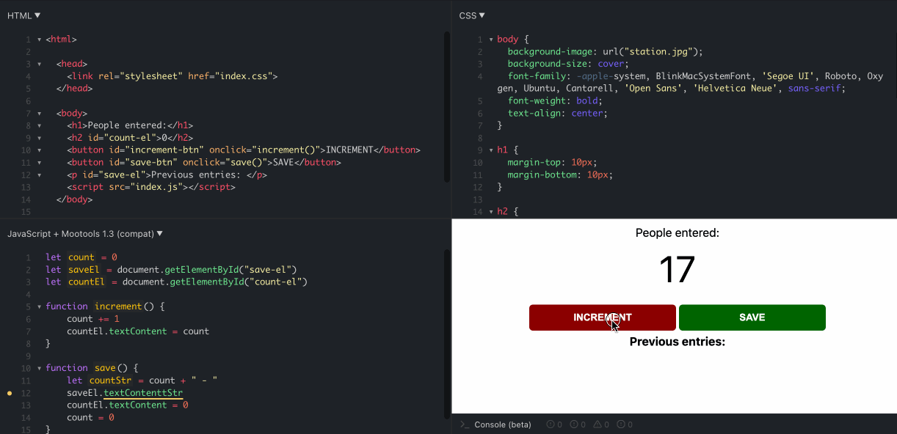
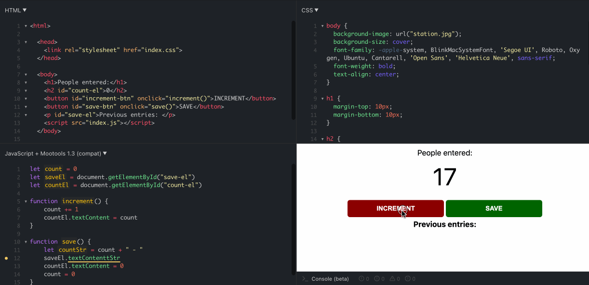
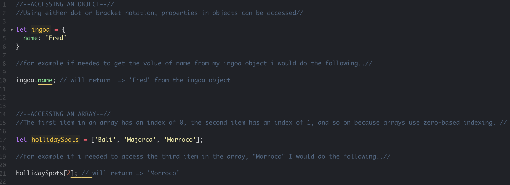

An analogy to describe JavaScript and its relationship to HTML and CSS.
Let's say we're building a flat-pack, In the same way that HTML contains the text, image, and other building
pieces for your website. Each flat-pack box comes with an instruction manual containing both text and images
that demonstrate how to put the flat-pack together. Using the instructions and materials supplied, we can construct
our flatpack similarly to how you would use CSS to design items on a website that might need to be aligned, displayed ,
or positioned in a particular location in order to function (assuming we've just put together a cabinet we are then,
blessed with doors that might have knobs or handles which open and close adding functionality to our cabinet),
similarly to how Javascript can add functionality or change elements to our HTML document via the dom.

Example of HTML, CSS & JavaScript used together
Explain control flow and loops using an example process from everyday life.
Let's say we're building a flat-pack, In the same way that HTML contains the text, image, and other building pieces for your website. Each flat-pack box comes with an instruction manual containing both text and images that demonstrate how to put the flat-pack together. Using the instructions and materials supplied, we can construct our flatpack similarly to how you would use CSS to design items on a website that might need to be aligned, displayed , or positioned in a particular location in order to function (assuming we've just put together a cabinet we are then, blessed with doors that might have knobs or handles which open and close adding functionality to our cabinet), similarly to how Javascript can add functionality or change elements to our HTML document via the dom.

Example of HTML, CSS & JavaScript used together
The order and sequence for when our code is run in a script is known as the control flow. Control flow is needed if a piece of code needs to be run repeatedly but with a different value each time. Furthermore for as long as a condition is met, a loop executes the same code repeatedly. Using breakfast as a metaphor example process, (assuming you're not a hobbit and only have breakfast once a day), you're daily breakfast would be an example of control flow , but if you are a hobbit and partake in consumption of multiple breakfasts meals you could compare that to looping….
Describe what the DOM is and an example of how you might interact with it.
The Document Object Model otherwise known as DOM, is a programming interface for HTML web documents. The program allows us to to create change or remove elements from a web document giving our page more functionality, making it more dynamic. We can access these elements in the HTML document and make changes to them using JavaScript. The DOM consists of a tree structure of nested nodes created by the browser that makes it possible for programming languages to readily access the HTML structure. This tree structure is often referred to as the DOM tree , commonly likened to an ancient family tree, which includes parents, children, and siblings , (depending on their relationship to other nodes, all nodes will sit somewhere in that family category, parents , children ect).

Example of the DOM tree layout
Differences between accessing data from arrays and objects.
Arrays can access data using index, whereas Objects access data using strings, in the picture below is an example i've put together.
